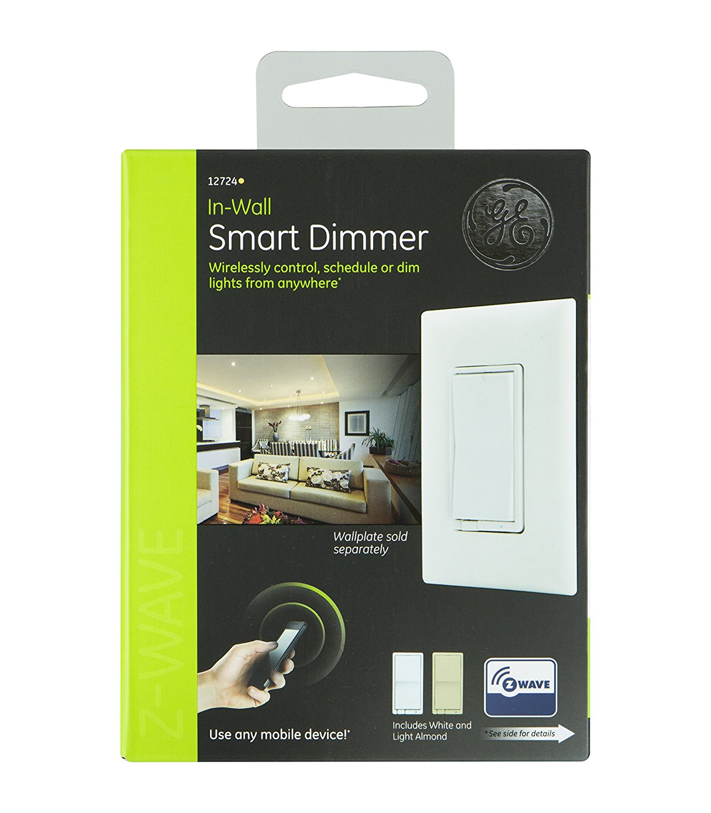

Jasco in-wall dimmable switch¶
GE Z-Wave Wireless Smart Lighting Control Smart Dimmer Switch, In-Wall, Includes White & Light Almond Paddles, Works with Amazon Alexa, 12724¶

Feature and benefits¶
- New aesthetically pleasing design with rocker switch and slender dimmer control slide bar
- Integrated linear full-range slide control for easy, precise operation
- Controls a variety of dimmable LED and CFL lamps
- Compatible with Incandescent and Halogen lamps
- Single pole or 3-way operation (when using 3-way switch); packaged with White, Ivory, and Light Almond color change kits
- Additional color change kits available in Black, Brown, Red and Gray
- Slim, compact housing fits easily into a standard wallbox and is suitable for multi-gang installations with other Decora products
- The slide bar location preserves the selected brightness level when the dimmer is switched OFF
- Microprocessor control offers flexibility to program LEDs and CFLs for best performance
- Switch under the color change kit to turn locator light ON/OFF
- No fins for multi-gang installation
- Screw terminals with back wire capability for easier installation, a Neutral wire is not required for operation
- Built-in radio/TV interference filter
Specification¶
- Power: 120 VAC, 60 Hz.
- Incandescent: 600W
- LED and CFL: 300W (2.5A)
- Single pole and 3-way
- Operating Temperature Range: 0°C to 55°C
- Storage Temperature Range: -10°C to 85°C
- Relative Humidity: 20% to 90% non-condensing
Inclusion/Exclusion to/from a network¶
- Put controller to Inclusion/Exclusion mode
- Push bottom paddle once and wait for exclusion completes
- Push bottom paddle once again and wait for inclusion completes
Configuration description¶
- LED light specify
Parameter: 3 (0x03)
Size: 1 byte
- Value:
- 0 = LED on when light off
- 1 = LED on when light on
- 2 = LED off all the time
Default: 0
- Invert switch
Parameter: 4 (0x04)
Size: 1 byte
- Value:
- 0 = ON at the bottom and OFF at the top
- 1 = ON at the top and OFF at the bottom
Default: 0
- Number of dim steps when receiving zwave command
Parameter: 7 (0x07)
Size: 1 byte
- Value:
1 ~ 99: number of steps
Default: 1
- Timming of dim steps when receiving zwave command
Parameter: 8 (0x08)
Size: 2 byte
- Value:
1 ~ 255: number of steps
Default: 3
- Number of dim steps when manual control
Parameter: 9 (0x09)
Size: 1 byte
- Value:
1 ~ 99: number of steps
Default: 1
- Timming of dim steps when manual control
Parameter: 10 (0x0A)
Size: 2 byte
- Value:
1 ~ 255: number of steps
Default: 3
- Number of dim steps when all-on/all-off command
Parameter: 11 (0x0B)
Size: 1 byte
- Value:
1 ~ 99: number of steps
Default: 1
- Timming of dim steps when all-on/all-off command
Parameter: 12 (0x0C)
Size: 2 byte
- Value:
1 ~ 255: number of steps
Default: 3